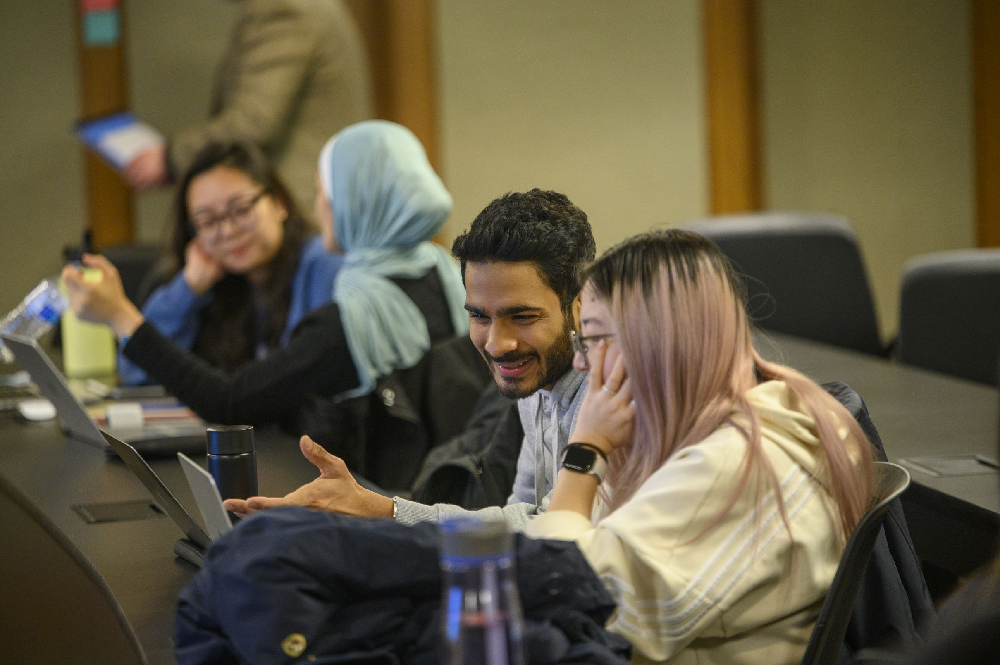

Welcome to CAPS!
We are happy to offer both in-person and virtual services. CAPS is committed to creating an environment based on our values of multicultural, multi-disciplinary and multi-theoretical practices that allow our diverse student body to access care, receive high quality services and take positive pathways to mental health.
CAPS has a limited number of private spaces available for students to connect with their counselor via telecounseling. Please contact the front desk for more information on those private spaces.
Connect with us:
Guide to Peer Counselling
Read more to know how to get in touch with peer counsellors and get the most out of it.
First Year Guide

U-M Counseling & Psychological Services (CAPS) welcomes all of our 1st year students including those who are living on campus and those who are located remotely. We are happy to launch a new resource created exclusively for you: “Go Blue! A New Student’s Guide to Surviving and Thriving at U-M: Mental Health Tips.”
Togetherall
Recognizing that some students who are feeling isolated, depressed, or anxious may find it challenging to connect with our resources and verbally express their needs, Counseling and Psychological Services (CAPS) is pleased to announce the piloting of Togetherall, an online, anonymous peer-support tool available for free to our students.